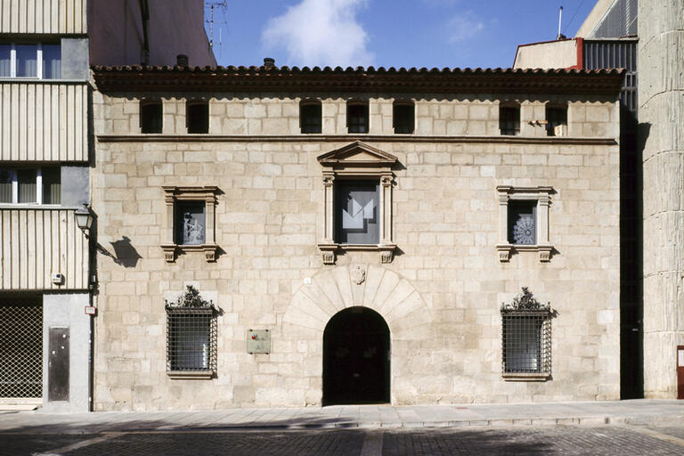

Visita · Mataró
La seu del Museu de Mataró està ubicada a l'edifici de Can Serra, casa pairal de Jeroni Serra Arnau, primer síndic de la vila a Corts. L’edifici conserva l’estructura originària de 1565.…